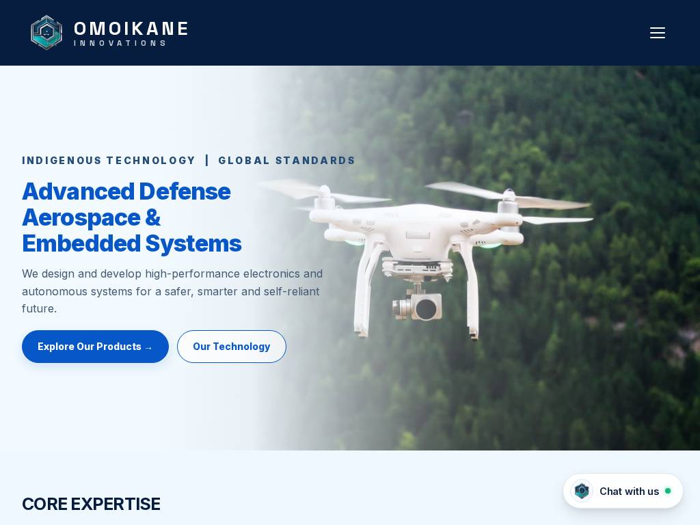
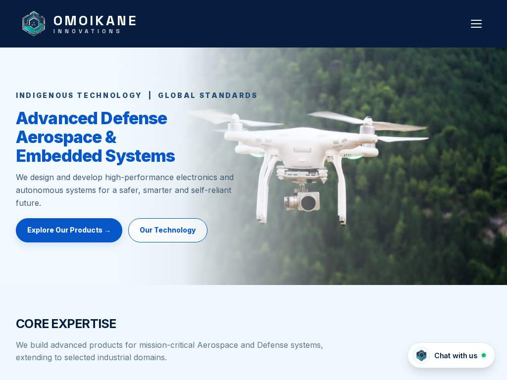
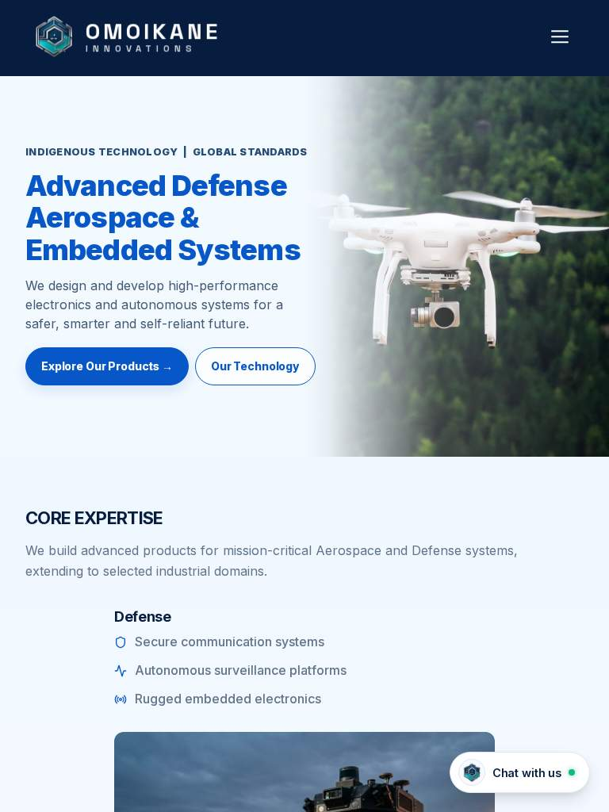
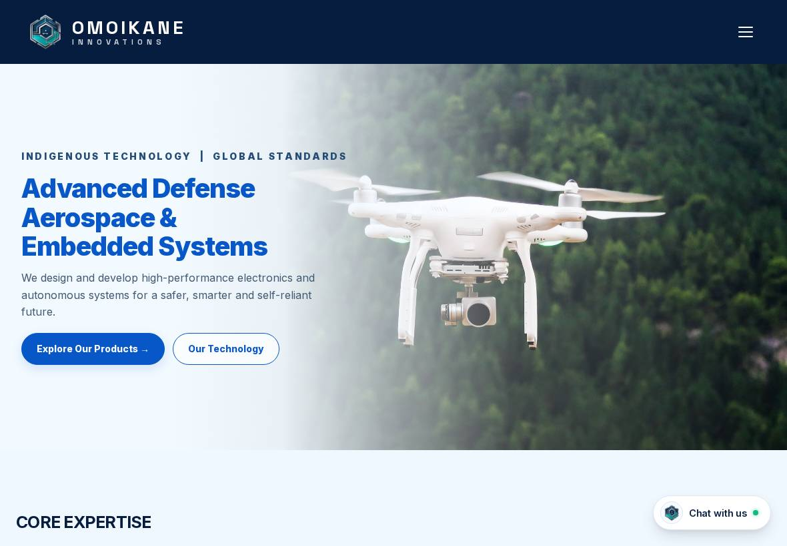
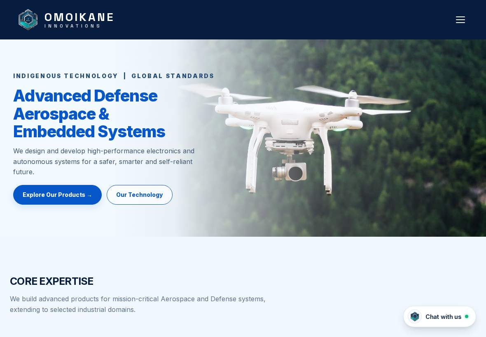
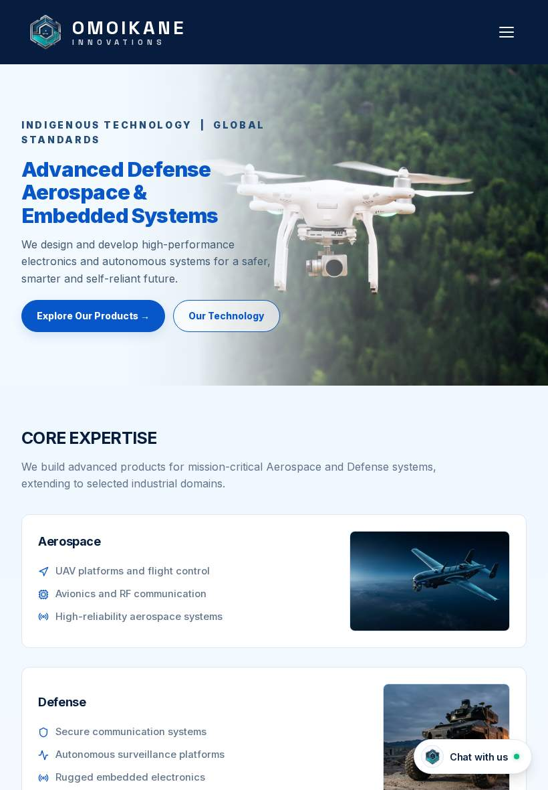
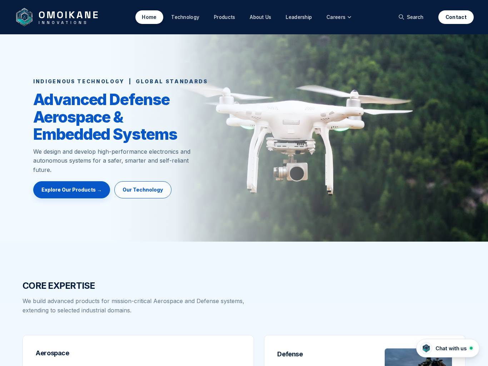
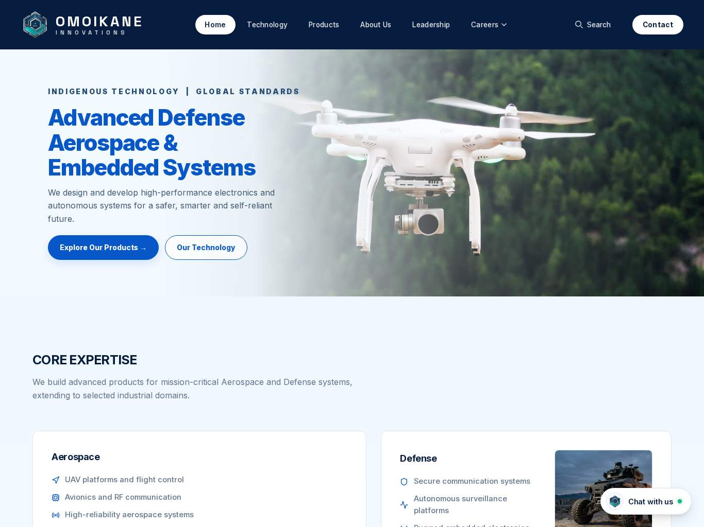
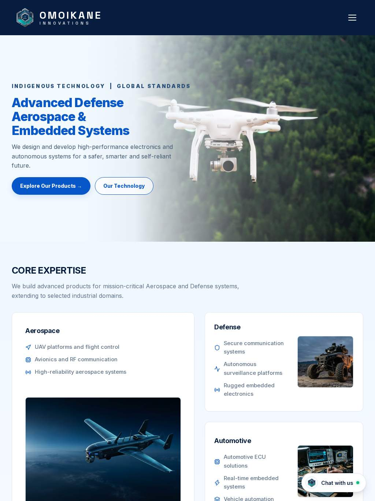

Live baseline 047478fa · Same loaded page: portrait → landscape → portrait. Chromium touch emulation, DPR 2.









144 rotation states · 240 static route/viewport cases · Search rotation checks